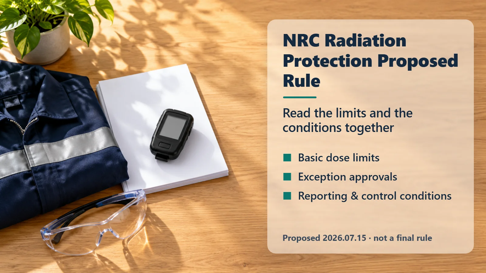
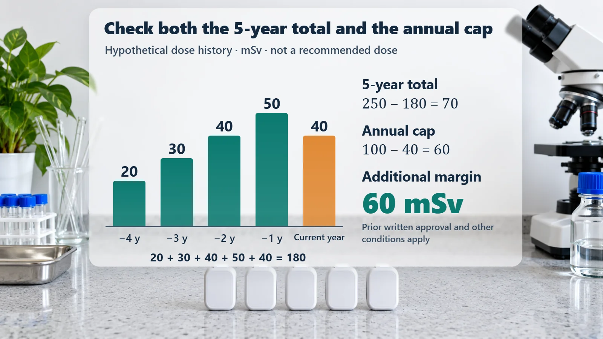
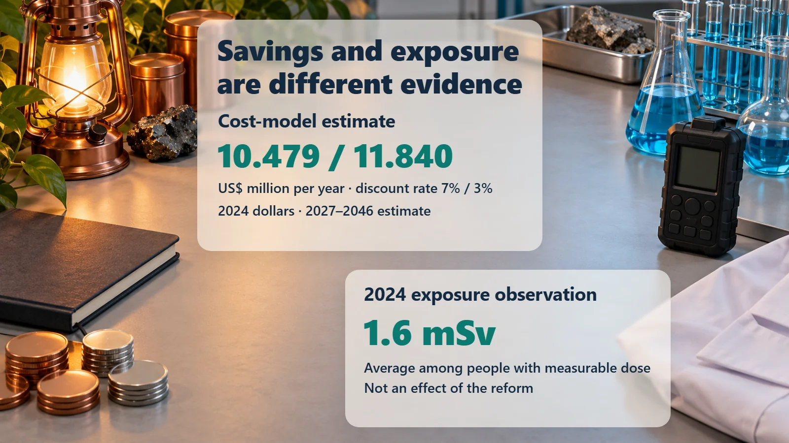

US Regulation · Radiation Protection
NRC Reform: What Changes Even When the Dose Limits Stay the Same
Reading the substance of the reform through a five-year dose calculation, public-exposure exceptions, cost estimates and observed exposure data.
When radiation protection rules are rewritten, is it enough to be told that the basic dose limits are unchanged? The US NRC's 2026 proposed rule also addresses dose-management principles, exceptions and reporting conditions. A look at the information Congress has requested and at the actual regulatory text shows that the conditions of application and the supporting evidence matter more than any single number.

What Congress asked for is the evidence behind the conclusions
On September 18, Representative Marcy Kaptur and Senator Patty Murray asked the NRC to provide 17 items of information on its regulatory reform within 15 days. The requests run from the list of rules being changed and their rationale, through staff time and costs, internal differing views and individual and cumulative safety impacts, to actual performance indicators. The oversight letter itself is neither an investigative finding that safety has deteriorated nor a law that changes dose standards.[1, pp.2–3]
Put simply, the questions are: what was changed, why is it being changed, how many resources are being spent, and how will the same level of protection be confirmed? Of these, the proposed rule and its cost analysis are public, but that does not mean the actual costs incurred, the handling of differing views and the cumulative effects of every reform have been demonstrated in a single document. Adding 15 days to the request date gives October 3, but that is simple calendar arithmetic. The absence of a public response as of September 29 is not, on its own, grounds to claim a missed deadline.[1][10]
First, separate the proposed rule from the rules in force
The radiation protection reform discussed here is a proposed rule published on July 15. Its proposed provisions must not be read as final rules that apply today. Even within the same stream of NRC reform news, it sits at a different stage from the fee final rule, which was published on June 16 and took effect on August 17. The executive order's schedule, the proposed rule, the final rule and the effective date each need to be checked separately.[2, p.43456][5, p.36470]
The proposed rule retains the basic occupational limit of 50 mSv/year total effective dose equivalent and the general public limit of 1 mSv/year, while seeking to change how doses are managed and the conditions for exceptions and reporting. The mSv is a dose unit that accounts for the effect of radiation on the human body. Each of these values applies to the population, dose quantity and period defined in the relevant provision; they are not numbers to be compared simply by adding up natural background and medical exposure.[2, pp.43494–43495]
The existing ALARA principle manages exposure to be "as low as reasonably achievable." The NRC's existing interpretation also explains that it does not mean using every possible means to reach an absolute minimum dose. The proposal would replace this with language on procedures, engineering controls and graded dose management. It is therefore inaccurate either to describe the existing framework as an unlimited duty to reduce dose or to say that the proposal eliminates all protective measures.[8][2, pp.43493–43494]
Calculate the five-year total and the single-year cap at the same time
The proposed planned occupational dose limit extension sets two constraints together, both in total effective dose equivalent: 250 mSv summed over the current year and the preceding four years, and 100 mSv in any single year. This does not mean ordinary workers may freely receive up to 100 mSv every year. Prior written authorization, an explanation of the risks and dose-management measures, and an accurate dose history are prerequisites, and declared pregnant women and minors are excluded. The lens of the eye has a separate limit.[2, pp.43494–43495, §20.1205]
Consider a hypothetical example to understand the conditions. If a worker's doses over the previous four years were 20, 30, 40 and 50 mSv and they have already received 40 mSv this year, the five-year total is 180 mSv. That leaves 70 mSv before reaching 250 mSv. But this year only 60 mSv remains before the 100 mSv cap, so the arithmetic additional margin with both constraints applied is 60 mSv. The smaller margin sets the limit.[2, §20.1205]
This 60 mSv is the result of a hypothetical calculation, not a recommended dose or an actual authorized amount.

Public-exposure exceptions come with conditions too
The proposal to retain the basic public limit of 1 mSv/year and the proposal to delete the existing fixed cap of 500 mrem/year (5 mSv/year) for separately authorized exceptions must be read together. Saying the limit is retained does not make the change to the exception pathway disappear.[2, p.43495, §20.1301]
Nor does it automatically permit unlimited exposure. Prior NRC authorization is required, together with justification of the need for, duration and management of the exception, and a basis showing that public health and safety remain protected. Judging the real-world effect requires looking at whose occupancy conditions and which dose assessments an exception is authorized on.[2, pp.43473–43474, 43495]
Annual savings estimates do not measure health effects
The draft regulatory analysis estimates the annualized net cost savings of the radiation protection reform at $10,479,000 at a 7% discount rate and $11,840,000 at 3%. These results use 2024 dollars and a 20-year analysis period from 2027 to 2046. A discount rate is an assumption used to compare costs occurring at different times in terms of their value at a single point in time. The two figures are not the two ends of a statistical error range.[9, Table ES-1, §4.2]
The savings estimate includes administrative and labor costs, among others. The fact that the analysis repeatedly recalculated its economic inputs with uncertainty applied cannot be read as meaning that cancer incidence or field safety was tested that many times. Claims that costs will fall need to be verified separately from evidence that actual exposures and levels of protection are maintained.[9, §§4.2, 5]
When reading an average, check the population and the time frame
In the NRC's 2024 occupational exposure statistics, the number of monitored individuals, corrected for transient workers counted more than once, was 90,579, and the number with a measurable dose recorded was 42,352. The 1.6 mSv average is the average for the latter group, not for all monitored workers. Moreover, the 2024 data are a baseline from before the 2026 reform, not after-the-fact results showing its effect.[11, pp.iii, v]
Even when the average or the total is the same, the distribution can differ. Hypothetically, 100 people each receiving 1 mSv and 10 people each receiving 10 mSv both give a collective dose of 100 person-mSv. But the degree to which exposure is concentrated on individuals is different. That is why workload, the high individual-dose range, multi-year cumulative doses and any gaps in records also need to be examined.[11; collective dose is an illustrative calculation]
Projected cost savings and observed exposure data answer different questions, and one cannot substitute for the other.

Read the conditions that change beneath the same numbers
Evaluating a regulatory reform means checking not only the caps in the regulatory text but also how exception approvals, records and reporting, and field controls connect. For example, if the number of reports falls after reporting criteria change, the first step is to distinguish whether events decreased or the scope of what must be reported decreased. If inspection findings fall while inspection scope and hours have also changed, the interpretation is different.[1, requests 14–16][2, §20.2203]
The key point these documents show is that cost savings and the level of protection each require their own evidence. Only by following through on the final regulatory text and conditions of implementation, exposure and inspection data collected under consistent definitions, and the handling of internal differing views and unresolved issues can the actual effect of the reform be judged.[1][2][6][11]